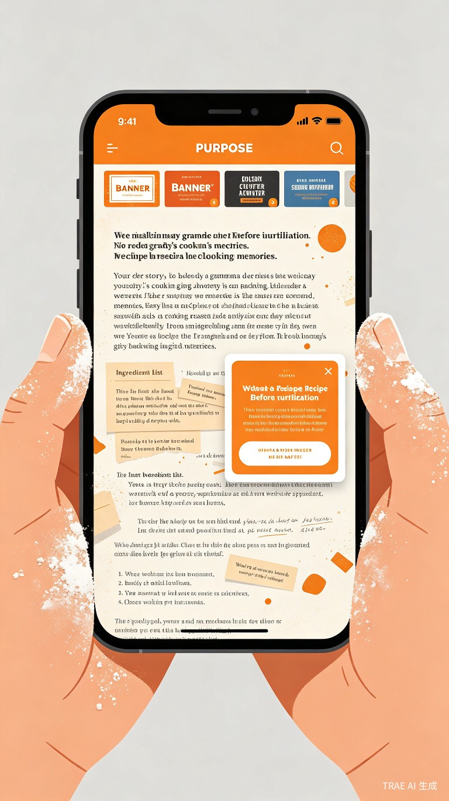
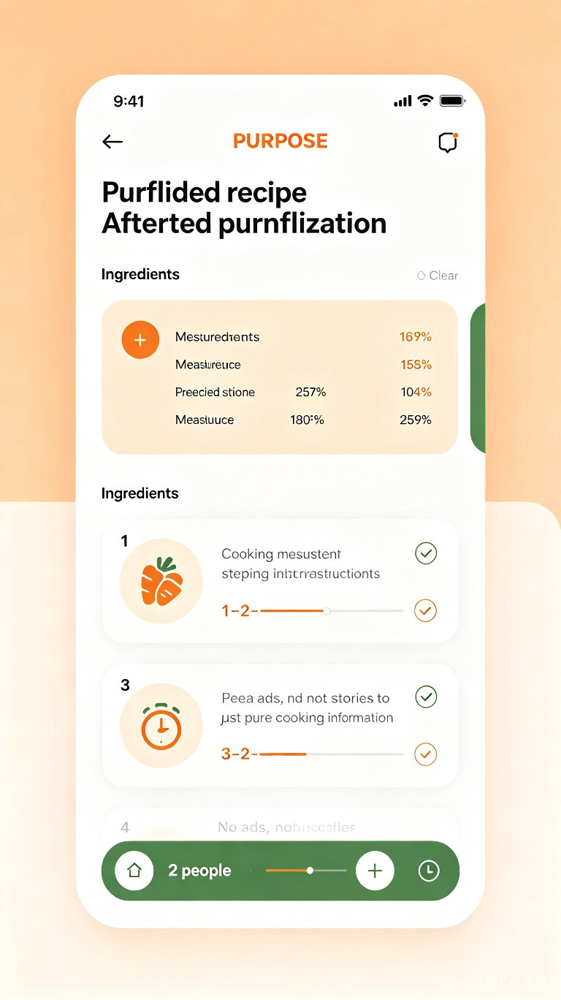

创意提案
菜谱提纯器
粘贴菜谱链接或拍照，一键把臃肿菜谱变成只剩食材、用量、步骤的纯净卡片
目标用户与使用场景
独居年轻人
下班后想快速做一顿晚餐，不想在冗长的菜谱故事里翻找关键信息
年轻家庭
周末为孩子准备营养餐，需要精确用量和清晰步骤，避免手忙脚乱
灶台前的烹饪者
手上沾着面粉或油渍，无法方便地滑动屏幕，需要语音播报和免手操作
当前痛点
-
01
广告泛滥 菜谱网站弹窗广告、横幅广告遮挡内容，阅读体验极差
-
02
故事冗长 动辄上千字的"回忆杀"故事，真正的菜谱信息被淹没在文字海洋中
-
03
步骤混乱 食材和步骤分散在文章中，难以快速定位关键操作节点
-
04
手脏难操作 烹饪过程中手上有油渍或水渍，无法方便地滑动手机屏幕查看下一步
-
05
换算麻烦 菜谱是4人份，实际只做2人份，需要心算所有食材用量
解决方案与核心功能
菜谱提纯器通过 AI 智能提取 技术，自动识别菜谱中的关键信息，去除冗余内容，生成标准化的纯净菜谱卡片。
核心功能
一键提纯
粘贴链接或拍照上传，AI 自动提取食材、用量、步骤，去除广告和故事
智能缩放
按人数自动缩放所有食材用量，2人份、4人份、6人份一键切换
语音播报
步骤语音朗读，灶台边无需看屏幕，听着做就行
分步计时器
每个步骤自带计时提醒，"炖煮15分钟"自动设置倒计时
反向推荐
输入冰箱现有食材，智能推荐你能做的菜，减少浪费
纯净分享
提纯后的菜谱可生成精美卡片，分享给朋友也是清爽版本
价值与意义
以 效率提升 为核心，让烹饪回归本质 —— 享受美食，而非与广告和冗长文字搏斗。
80%
信息获取时间缩短
0
广告干扰
3s
完成人数换算
减少食材浪费
降低烹饪门槛
提升下厨频率
优化烹饪体验
界面示意
提纯前 vs 提纯后对比，从信息过载到纯净高效。
❌ 提纯前 — 信息过载

✅ 提纯后 — 纯净高效
